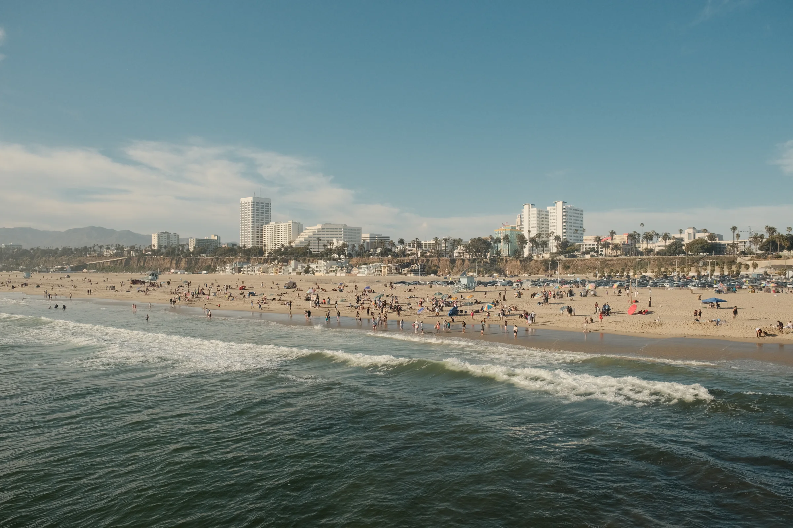
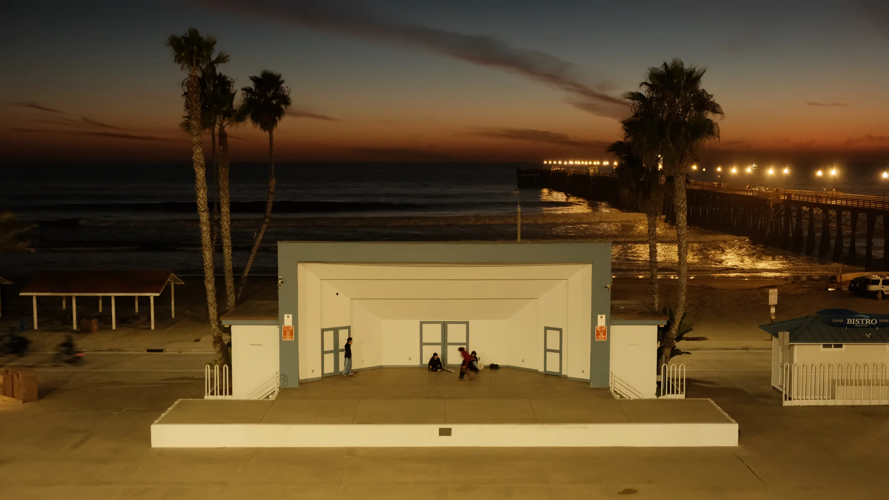
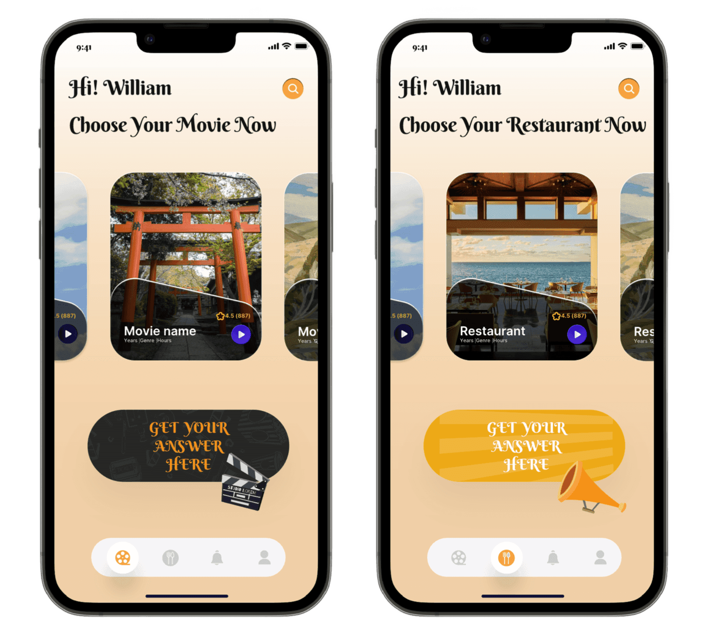
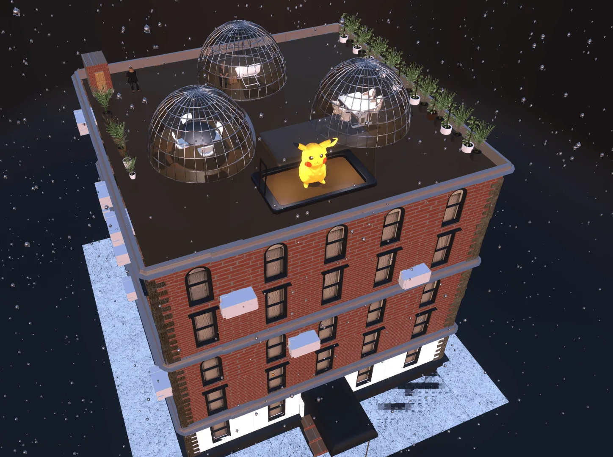
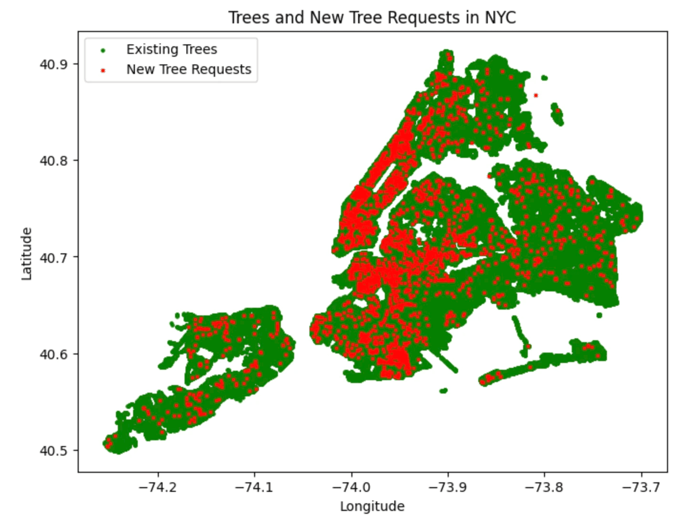
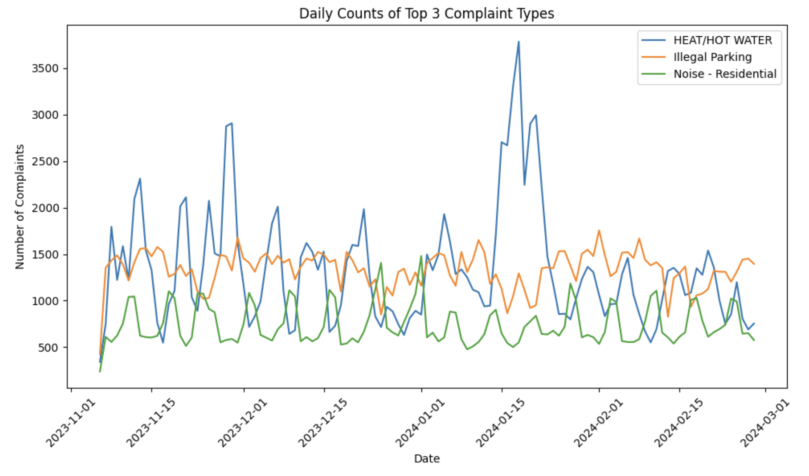
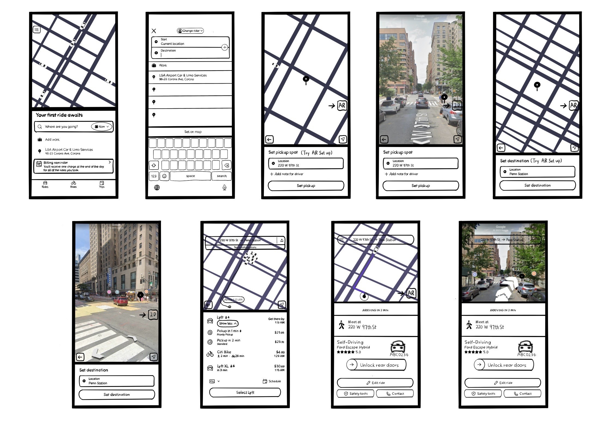
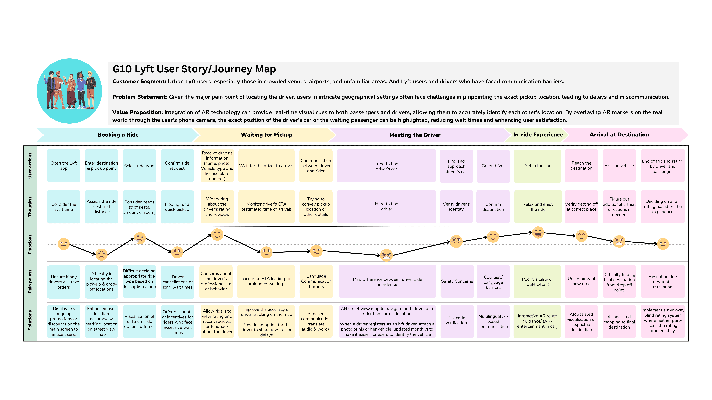
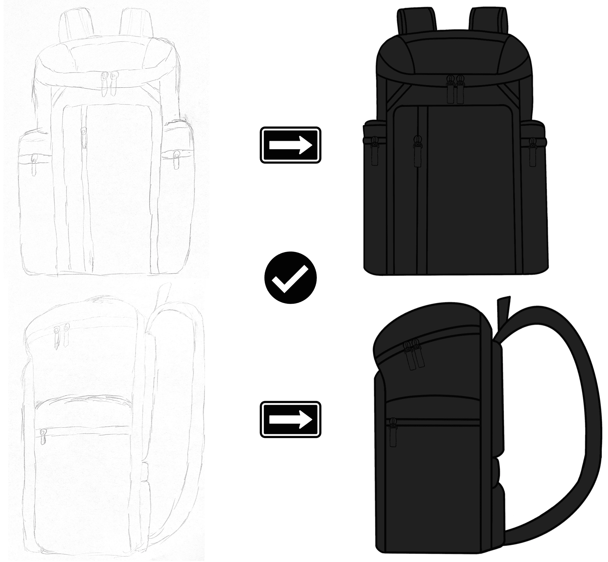
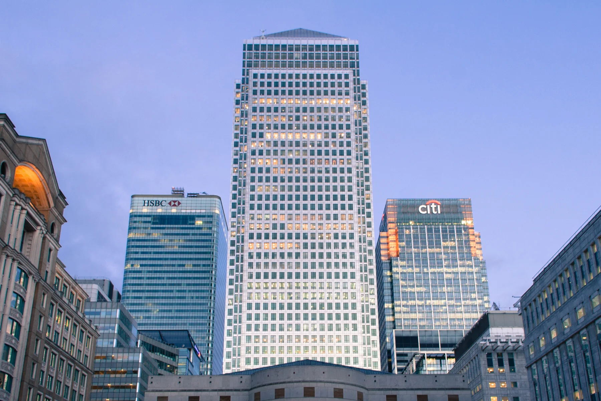

Versatility
Drove a 20% increase in user engagement at Poppy and enhanced experiences for over 6 million DiDi users.
01 / Arrival
A personal portfolio
Product Management / Operations / Brand Strategy
A Columbia MSc graduate and UCL alum building across telecom, product, brand, operations, analytics, and international business.

Through my lens18 frames, a different perspectiveFinding a product manager? Scroll for a focused portfolio.

From observation to systems — one visual language across photographs, products, and operations.
Observation is where every system begins.
Steve Jobs
I'm Jingshan "William" Shi, a Columbia MSc graduate and UCL alum working across product, operations, brand, analytics, and telecom business development. My work sits between user needs, commercial execution, and cross-border growth.
Since August 2025, I have been a Graduate Trainee at China Mobile International, where I have been exposed to GSD data card products, overseas MVNO business, and projects supporting Chinese enterprises expanding globally. Earlier roles at Authentic Brands Group, Poppy, and DiDi built my foundation in APAC brand management, product operations, user experience, and data-informed decision making.
Drove a 20% increase in user engagement at Poppy and enhanced experiences for over 6 million DiDi users.
Developing exposure to GSD data cards, overseas MVNO operations, and Chinese enterprise globalization projects.
Developed brand protection strategies and optimized royalty reporting at Authentic Brands Group.
Led an AI-powered recommendation app in undergraduate study and co-founded Intellioice International Education.
Two cities taught me to frame better questions.
New York, United States
Master of Science in Management Science and Engineering
London, United Kingdom
Bachelor of Science in Information Management for Business
The questions became operating decisions.
Decisions become products when structure meets imagination.
Move across three planes before entering the case studies.



App Prototype
Led an AI-powered recommendation app during undergraduate study to streamline dining and movie decisions through customized recommendations.

Spatial Product + CAD
A foldable rooftop-igloo system that adapts to weather on demand, extends NYC rooftop use across all four seasons, and includes a CAD prototype for extreme-weather operation.

Urban Data
Combined NYC apartment data, 311 complaints, and urban forestry data to support better rental decisions, with project code available on GitHub.

AR Product Concept
AR visual cues help passengers and drivers accurately identify each other's location.

Journey Mapping
A full user-experience map used to identify improvements across the Lyft journey.

Marketplace Prototype
A job-search platform for UK students to find opportunities at tech and business startups.

Product Design
Customer analysis translated into functional and emotional design requirements for an ideal bag.

Photo: Mark Gilbert (Judas6000) / CC BY-SA 3.005 — UCL / London
A different medium, the same instinct for framing.
A separate creative thread in the portfolio, connected to audience-building, content planning, and the discipline of making information feel considered.
YouTubeFujifilm frames of city streets, coastlines, and quiet travel details.
Photography returns the story to where it began: attention.
Showing all 18 photographs
Drag the frames horizontally. Open any image to see its full composition.
The next chapter starts with a conversation.
Scan the QR code to add me on WeChat.